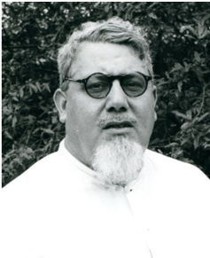
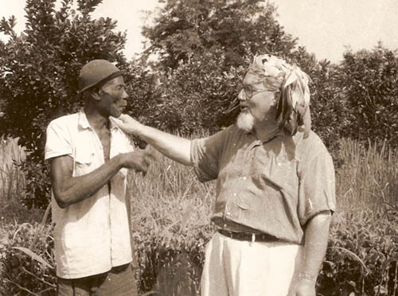

Nacque a Spoleto (PG), 16/4/1902. Aveva fatto il noviziato a Savona, sotto P. G. Bernabé, uomo severo, ma dalla mente aperta e dal cuore grande, tanto da riconoscere, in questo ragazzo "diverso" la stoffa di un missionario. Fece la sua professione perpetua il giorno 01/11/1925
E ordinato sacerdote 14/02/1926.
P. Giorgetti fece il suo apprendistato in Africa a Mupoi con P. Gerolamo Cisco ben noto per la sua severità. Si può riassumere con alcune date il tirocinio della vita missionaria di P. Giorgetti, assai più vario di quanto si pensi: 1926-28 a Mupoi; 1928-30 a Yubu; 1930-32 a Wau (segretario e procuratore); 1932-38 a Mupoi, superiore; 1939-40 a Raffili; nel 1945 a Yubu; nel 1945-46 a Mupoi; nel 1946-48 a Mayinbanguru, a est di Yambio, stazione spostata a Rimenze, dove fu dal 1948 al 1951; 1951-54 a Yambio, 1955-56 ancora a Mupoi; 1957-60 a Yubu e dal 1960 al 1964 (cioè fino all'espulsione) a Maringindo. Anche questa semplice enumerazione ci mostra “Ghèro” (così veniva chiato p. Giorgetti dalla gente) non bene accomodato su una sedia fissa, ma quasi in moto perpetuo attraverso tutto il paese zande, eccetto la sosta di due anni a Raffili. Per i "suoi" Azande, Ghèro fu davvero un capo, sia perché nel territorio della missione il superiore faceva anche le funzioni di capo, sia perché nel suo stile di apostolato agì sempre "alla grande", da capo, non dimenticando però d'essere soprattutto "padre". Da tempo p. Giorgetti s'era accorto che la liturgia latina, così come praticata in Europa e trasportata tale e quale in Africa, non aveva un grande mordente sugli indigeni. Quello che ci voleva era la loro musica; poi, un passo avanti, la loro danza, sia pure corretta, ma non snaturata. Furono così composti canti indigeni di ogni genere per la chiesa, subito imparati e cantati a pieno coro da tutta l'assemblea. Poi danza paraliturgica, come la rappresentazione della festa del Natale e della Via Crucis.
Come etnologo P. Giorgetti è noto in campo internazionale per la sua profonda conoscenza degli Azande. Ne sono prova i tre libri sul popolo Zande. I tre libri, messi assieme, formano un monumento notevole sulla cultura del popolo zande. Oltre a vari articoli pubblicati in "Nigrizia", tre articoli apparvero in riviste a livello internazionale, quali Africa (Londra) e gli Annali Lateranensi.
Dal 1964 Ghèro abitò nella casa di S. Pancrazio, a Roma, dove morì il 7/10/1978.
Tra le sue opere: Note di Musica Zande. Trascrizione musicale di uccelli, tamburi, xilofoni e canti zande, Mus. Comb. 5. Musica Africana. Sua tecnica e acustica. Mus. Comb. 10. La superstizione Zande, Mus. Comb. 18, 1965, con prefazione del famoso etnografo del Suda n E. E. Evans-Pritchard. Death among the Azande of the Sudan, Nigrizia, stampa 1968. Non siamo cannibali, EMI, 1977.

